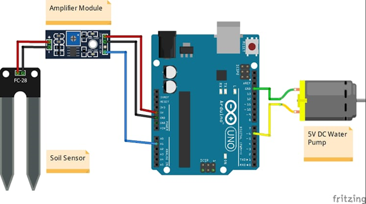

Plant Watering system using Arduino
The Arduino is connected to a moisture sensor and relay via a breadboard. The Moisture sensor takes multiple readings from the soil each minute and when the moisture content drops below the pre-set value the relay is triggered sending 12v to the water pump. The power is cut again when the moisture sensor reads a large value.
Internet of Things

Project description
There are four pins on the module:
AO: Analog Output
DO: Digital Output
VCC: 'VCC' stands for Voltage Common Collector. We'll connect the VCC pin to 5V on the Arduino
GND: In electronics, we define a point in a circuit to be a kind of zero volts or 0V reference point, on which to base all other voltage measurements. This point is called ground or GND.
Step 1:
start
Step 2:
command the Arduino using Arduino software
Step 3:
connect VCC on the relay to 5V pin on Arduino
Step 4:
Connect GND on the relay to negative power rail of breadboard
Step 5:
Connect IN on relay to Pin 3 on Arduino
Step 6:
Connect the '-' black wire from battery pack to the negative power rail on the breadboard
Step 7:
Next, connect the black wire of pump to negative power rail
Step 8:
Connect two F-F jumper wires from the soil moisture sensor probe to the comparison module included in the kit.
Step 9:
Connect a F-M jumper wire from AO on the module to A0 on Arduino
Step 10:
Connect a F-M jumper wire from GND on the module to GND on Arduino
Step 11:
Connect a F-M jumper wire from VCC on the module to 3.3V on the Arduino
Step 12:
Connect red wire of pump to NC. You may need to use a small jewellers Phillips screwdriver to loosen the holding before plugging in the wire, and then tightening it again.
Step 13:
Connect the '+' red wire from battery holder to COM on the relay.
You may need to use a small jewellers Phillips screwdriver to loosen the holding
before plugging in the wire, and then tightening it again.
Step 14:
Connect a M-M wire from the negative power rail of breadboard, to GND pin on Arduino
Next, we will get started with programming the Arduino, so connect it to a computer with the Arduino IDE installed.
Step 15:
Now that you have connected the kit with an Arduino, the 'moisture' threshold value found in the sketch above may need to be modified based on what values your sensor outputs when the sensor is completely dry, compared to when the sensor is completely submerged in water.